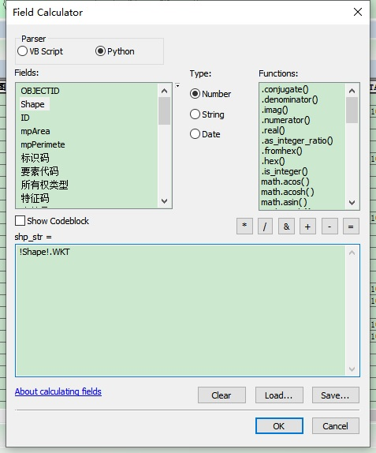

注：ArcMap 版本为 10.6.1
一、将 shape 字段处理为 WKT 文本
- 在属性表中添加一个 Text 类型的字段，大小尽量大一些；
- 使用字段计算功能
- shape file 的字符串类型字段的大小有限制（254）

二、
def MySub(feat):
partnum = 0
# Count the number of points in the current multipart feature
partcount = feat.partCount
pntcount = 0
str = ''
# Enter while loop for each part in the feature (if a singlepart
# feature, this will occur only once)
while partnum < partcount:
part = feat.getPart(partnum)
pnt = part.next()
# Enter while loop for each vertex
while pnt:
pntcount += 1
// str = str + '%f' %pnt.X + ',' + '%f' %pnt.Y + '_'
pnt = part.next()
# If pnt is null, either the part is finished or there
# is an interior ring
if not pnt:
str = str + '%f' %pnt.X + '' + '%f' %pnt.Y
pnt = part.next()
else:
str = str + '%f' %pnt.X + '' + '%f' %pnt.Y + '_'
partnum += 1
return str[0:len(str)-1]